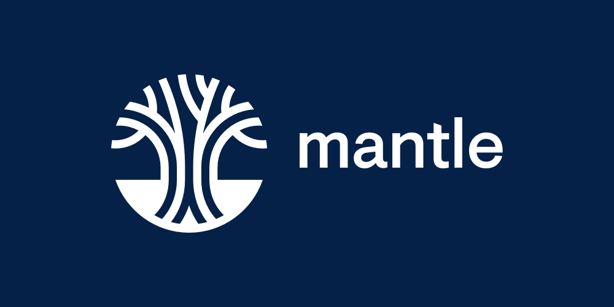
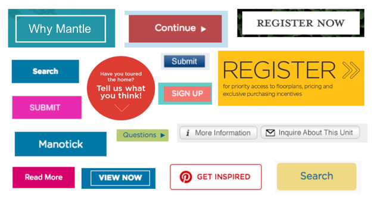
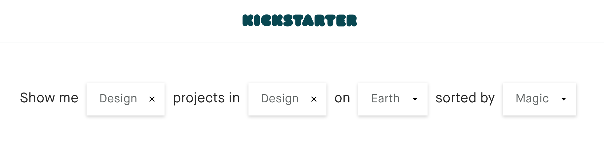
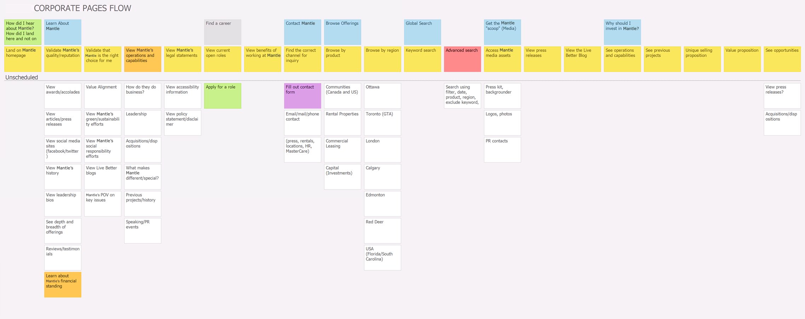
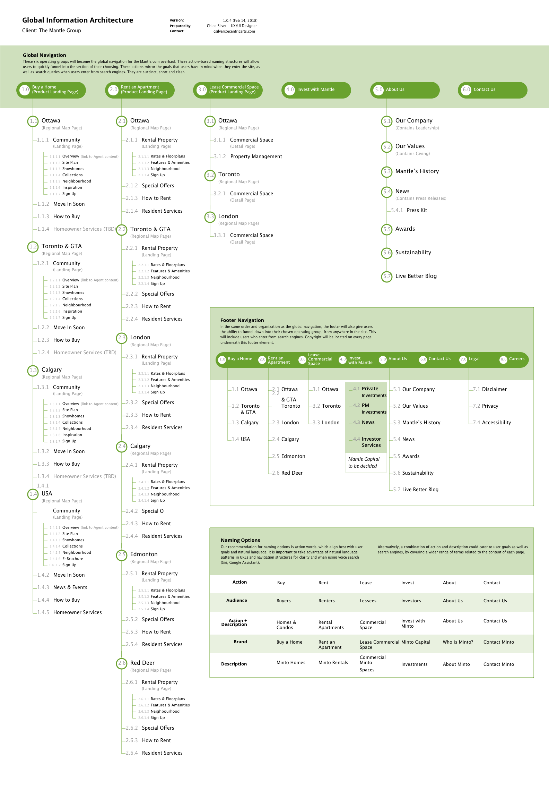
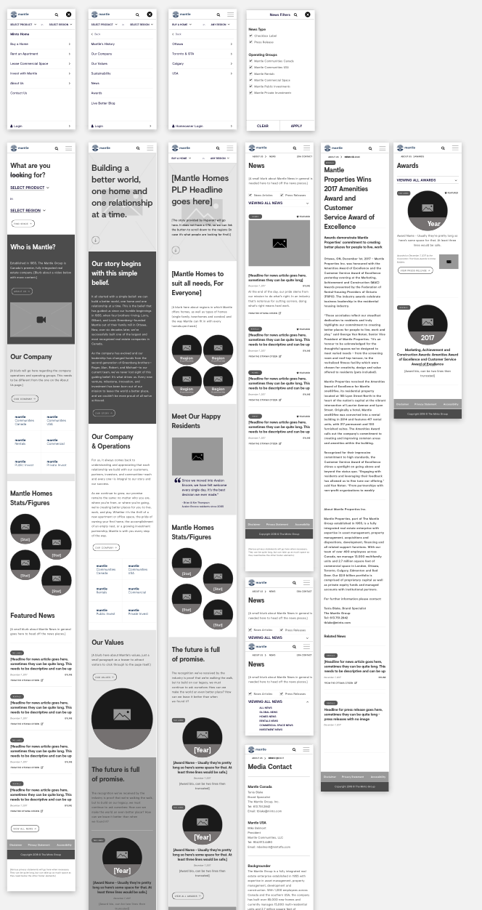
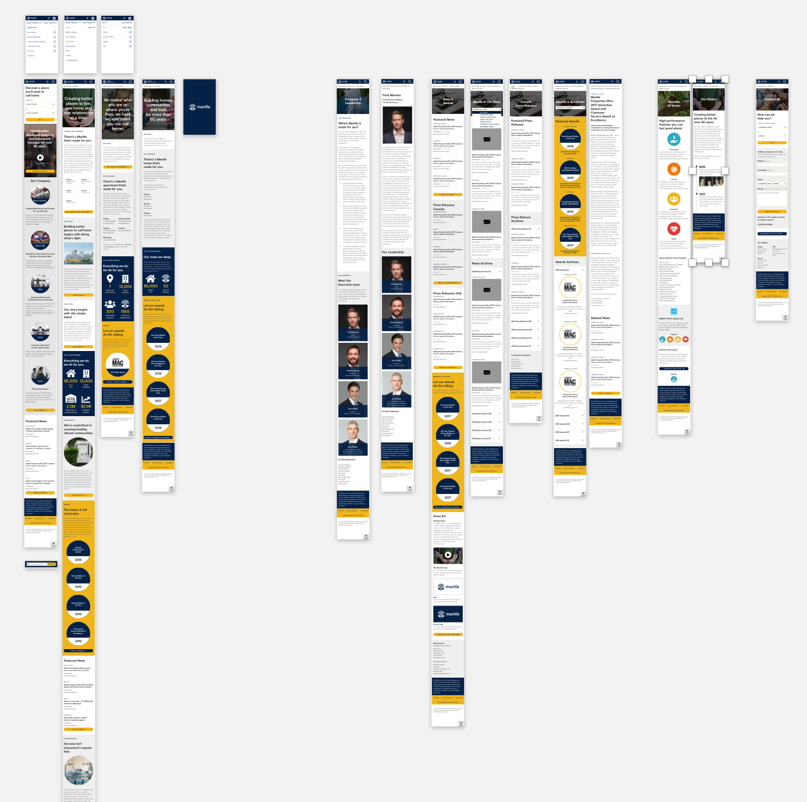

The goal of the overhaul is twofold. First, to improve both the website experience for each of the several types of users and second, to provide a facelift to the Mantle brand that would permeate throughout the website and into every touchpoint in the Mantle experience.
Problem Definition
Mantle’s business is consistently growing, but their website had been falling behind this success. The real estate company hadn’t had the resources to pay close attention to their digital presence until now, when they would be undergoing a rebrand. And so, I was tasked with the complete overhaul of their existing website, both in user experience and interface rethinking as well as brand application and development. Not to mention, Mantle provides homes and services to all sorts of people in different ages and stages of life. The sheer vastness and variety of their user base is staggering. And so I began at the start.
I would later find out in my auditing that the current website had been built piecemeal, in layers by a variety of different outside agencies who had varying amounts of understanding of Mantle’s business levels. Their existing experience was, as a result, broken and completely different in both voice and interface from page to page.
New Logo
As lead designer on this project, I had the fortune to assist early on with the rebranding process before digging into the user experience and strategy. Specifically, I assisted in developing Mantle’s new logo under the care of our partner firm, Hyperakt. This was an indispensable part of the process because I was able to work closely with Hyperakt to develop how the brand and identity would live and breathe on Mantle’s new website.
The tree’s four roots were creatively retained due to their symbolic representation of Mantle’s four founding brothers. Colophon Foundry’s Visuelt, used for the wordmark, is lovely bespoke face based on the same foundry’s constrained Apercu. It works well in various sizes and media, and in fact was not paired with a secondary font for this project. All Visuelt, all the way.
Audits & Research
Mantle provided me with a plethora of documentation created by several of their past partner firms. I pored over persona guides, analytics spreadsheets, slideshow presentations, old unused wireframes from past (and current) versions of the website, and much more. All of this gave me context as I made my user experience audit of the website’s 1200+ pages.

Taking a cue from Brad Frost’s brilliant toolset, I also conducted an interface inventory of the existing forms, fields and interactable elements on the website. This helped me to paint a picture of what kinds of interface components might be necessary to redesign down the road but more importantly, it uncovered the true magnitude of inconsistency that was found amongst the pages of Mantle’s website.
With all of Mantle’s micro-sites needing to appeal to a specific audience, they were somehow given free reign of the design of their own pages and as a result grew completely different from each other. The navigational components were the scariest by far, especially concerning the fact that elements would change order, appear and disappear, or simply stack on top of each other until they filled half the page in some instances.
On top of everything else, Mantle’s website had major accessibility issues. Colour contrast ratios were not being met, their forms did not meet minimum standards for error messages, and there were instances of non-live text inside images on almost every page. There was a budget to fix these issues, which I counted myself lucky to have. Making websites accessible to everyone is one of the joys of my job.
Now that I knew what wasn’t working, I checked out what Mantle’s competitors and other large-scale websites were doing. Creating a navigational system that would enclose so much content while still retaining its usability would be a challenge to be sure. One piece of design inspiration that stuck to my brain was the search functionality for Kickstarter. I love the way their series of dropdowns are at once able to be both vague and specific, depending on how much information the user has.
Noting the healthy amount of organic search traffic leading to the homepage, Mantle needed a search functionality that would suit different needs while remaining simple. And so, we adopted the natural language search. Speaking as the user (in first person), the sentence contains inline dropdowns that the user can fill in. By this method, the user personalizes the choice based on how they would speak the sentence regarding themselves. It’s easy to use, friendly, customizable, and draws a connection with the user by building the sentence together to find an answer.
I presented this preliminary research to Mantle, who was luckily very receptive to my findings and suggestions on moving forward. Presenting a findings report with so many problems can sometimes be met with resistance, especially considering how many agencies Mantle had already gone through. We were now in a good place to begin storymapping, a process I prefer to reveal once all involved agencies feel like a true team.
Storymapping
Together with Mantle’s internal project leads, I led a session in breaking down the user’s process into tasks and goals. Very literally, we mapped a story of notes for each type of user, which I would later reference against to create wireframes. It was a pleasure to complete this process at Mantle’s offices and invite various stakeholders to participate or review the maps as we posted them to the wall.
The process and the outcome of storymapping sow a sense of teamwork on both sides of the fence. Storymapping provides something even better than buy-in; it provides an outcome that the client feels they have made. This also puts the creative work into a great place where there are fewer surprises in future presentations to the client.
Information Architecture
Organizing the navigation was possibly the most complex task of the entire project. As you can see below, each sub-navigation contains many different pages, as well as repeating patterns of groups of pages. It was imperative that we ironed out the current inconsistencies in experience and flow at this stage before I moved on to wireframing.
The sitemap was somewhat straightforward to create once we completed the storymaps. This piece would be very important for me later, outlining which content pages would require which template. I would not need to design all of these pages, only the most complex pages or page-pieces the utilized each template.
Wireframes
I was able to utilize my existing knowledge of Mantle’s rebrand to shape the wireframes. That knowledge, mixed with an understanding of the tasks and goals in the storymaps meant that I needed to create only a handful of wires. Depending on what was necessary, I created some full pages, some standalone components, and some individual elements. As per Brad Frost’s Atomic Design system methodology, I designed these components and elements to be reusable so I could build the website like pieces of a puzzle.
Visual Language
Gold and royal blue were handsome colours to work with. They provide strong legibility and colour contrast, and the gold was eye-catching enough that I could use it on special CTAs to provide focal points.
I utilized a major visual component of a rule of thirds in various design elements like the underlying grid and image cropping. Circular elements were also a large element of the brand, utilized in button shapes and other form elements.
Final Product
Check out the final product in a mobile prototype below.